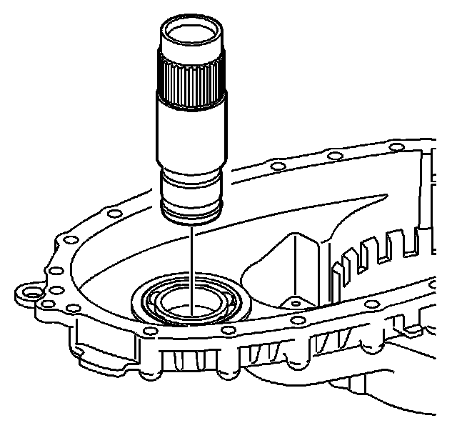
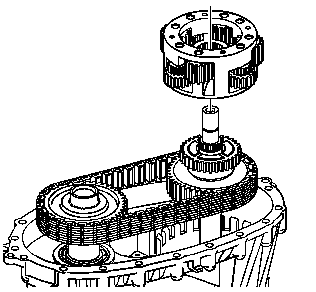
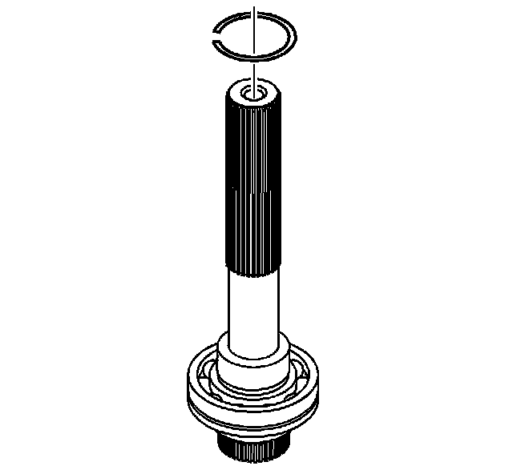
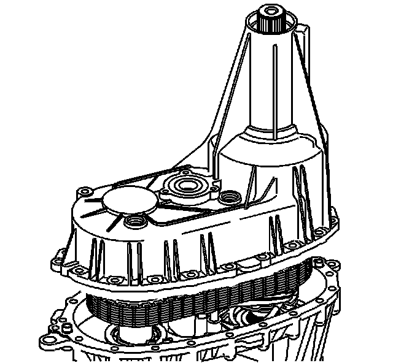
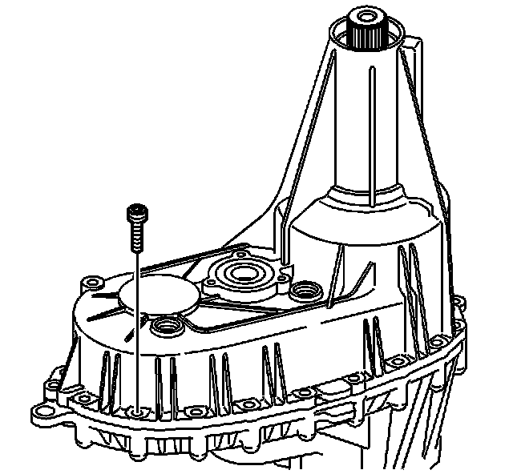
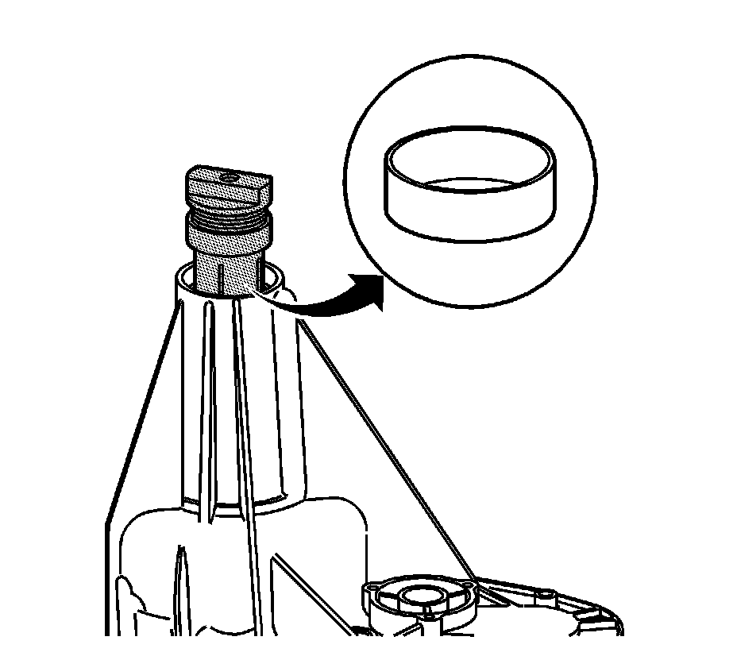

Transfer Case Assemble
Transfer Case Assemble
Tools Required
^ J 3289-20 Holding Fixture
^ J 8092 Universal Driver
^ J 22912-B Rear Pinion and Axle Bearing Remover
^ J 36850 Transjel Lubricant
^ J 42176 Universal Driver Handle - Non-Threaded
^ J 42738 Seal Installer
^ J 43484 Front Output Shaft Seal Installer
^ J 45380 Transfer Case Rear Bushing Remover and Installer
^ J 45756 Rear Output Shaft Seal Installer
^ J 45757 Mainshaft Support Bushing and Bearing Installer
^ J 45759 Assembly Fixture
Notice: Refer to Fastener Notice.
1. If removed, install the transfer case mounting studs.
Tighten the mounting studs to 10 N.m (89 lb in).

2. Attach the J 45759 to the front transfer case using the adapter studs. All of the assembly procedures can be performed with the case mounted to the J 45759.
3. Install the J 45759 (2) into the J 3289-20 (1) and secure with the pivot pin.

4. If the vent is removed, apply pipe sealant GM P/N 12346004 (Canadian P/N 10953480) to the threads on the vent.
5. Install the vent.
Tighten the vent to 6 N.m (53 lb in).
Important: Lubricate all of the bearings and bearing journals with transfer case fluid during installation.
6. Install the input shaft bearing in the front case half.
^ Use a hammer and a brass drift only on the outer bearing race.
^ Ensure the bearing is kept square to the bore while installing.
7. Install the front bearing, for the front output shaft, in the front case half.
^ Use a hammer and a brass drift only on the outer bearing race.
^ Ensure the bearing is kept square to the bore while installing.
8. If it is a new shaft or if the cup plug was removed, install the cup plug in the front output shaft, using a suitable driver. Install the cup plug 1 mm (0.039 in) from flush with the end of the shaft.

9. Install the front output shaft assembly.

10. Install the input shaft.

Important: If using the chain and sprockets again, ensure to align the marks of the drive chain and sprockets.
11. Install the drive chain and sprockets. The blue link on the chain faces up.

12. Install the front sun gear.
Important: The planetary differential gears are timed to the sun gears. If the gears are not timed properly, the differential will not rotate without binding.
13. With the rear side of the planetary differential facing up, align the marks on the pinion gears. Position the alignment marks with an area on the planetary housing that can be reference for all gears.

14. Install the planetary differential assembly.
^ Do not rotate the planetary differential pinion gears when installing.
^ Ensure the alignment marks are still in position.

15. Lubricate the sun gear thrust washer with J 36850 or equivalent.
16. Install the sun gear thrust washer.

17. Install the rear sun gear.
^ The shoulder side of the gear faces up.
^ Do not rotate the planetary pinion gears.
18. Temporarily install the rear output shaft to the planetary differential and the rear sun gear.
19. Rotate the rear output shaft three or four revolutions to rotate the planetary differential pinion gears. If properly aligned, the planetary pinion gears will rotate freely, and there will be no binding.
20. Remove the rear output shaft without disturbing the rear sun gear.
21. Install the front output shaft rear bearing in the rear case half.
^ Use a hammer and a brass drift only on the outer bearing race.
^ Ensure the bearing is kept square to the bore while installing.
22. Using a hydraulic press and the J 22912-B, install the rear output shaft bearing.
^ The retaining ring groove on the bearing goes toward the input end or forward.
^ Use a suitable press plate on the end of the rear output shaft.
^ Ensure the bearing is supported on the inner race.

23. Install a NEW retaining ring for the rear output shaft bearing.
24. Using the J 42176 (1) and the J 45757 (2), install the input shaft rear support bushing in the rear output shaft.

25. Install the rear output shaft in the rear case half.
1. Spread the rear output shaft rear bearing outer retaining ring.
2. Install, until the rear output shaft bearing outer retaining ring is seated in the bearing groove.
Important:
^ Ensure that both the sealing surfaces on the front and rear case halves are free of dirt, oil, and cleaning solvent.
^ Ensure the locating pins are installed in the case halves.
Install the locating pins in the front case and rear case half, if necessary.
26. Apply a 3.175 mm (1/8 in) bead of room temperature vulcanizing (RTV) sealant GM P/N 12345739 (Canadian P/N 10953541), or equivalent, to the mating surfaces of the front case half.

27. Lower the rear case half into place.
The rear output may require rotating to align the teeth with the planetary carrier.

Notice: This component is made of magnesium. Proper assembly is required to prevent damage. Ensure the magnesium transfer case housings are properly insulated from all external steel components, or galvanic corrosion will occur. New nylon coated case bolts and aluminum washers must be used. Use only aluminum fill and drain plugs. Use only aluminum brackets under the case bolts. Ensure new seals are installed that have a rubber insulated outside diameter and have no tears or cuts. Extensive damage will occur if there is galvanic corrosion between the magnesium and steel components.
28. Inspect the nylon coating on the case bolts for cuts or tears.
29. Replace the case bolts if there is any damage to the nylon coating.
Important: The case bolts are self-tapping; they must be hand started. Do not use power assisted tools to install the bolts.
30. Install the case bolts, the washers, and the brackets.
Tighten the case bolts to 21 N.m (15 lb ft).

31. Using J 45380, install the output shaft bushing, if removed or new.
32. Using J 45756, install the rear output shaft seal.

33. Apply pipe sealant GM P/N 12346004 (Canadian P/N 10953480) to the threads on the drain plug and fill plug.
34. Install the drain plug and the fill plug.
Tighten the drain plug and fill plug to 25 N.m (18 lb ft).
35. Using the J 43484 (2) and the J 8092 (1), install the front output shaft seal.
36. Using the J 42738, install the front input shaft seal.
37. Remove the transfer case from the J 45759.